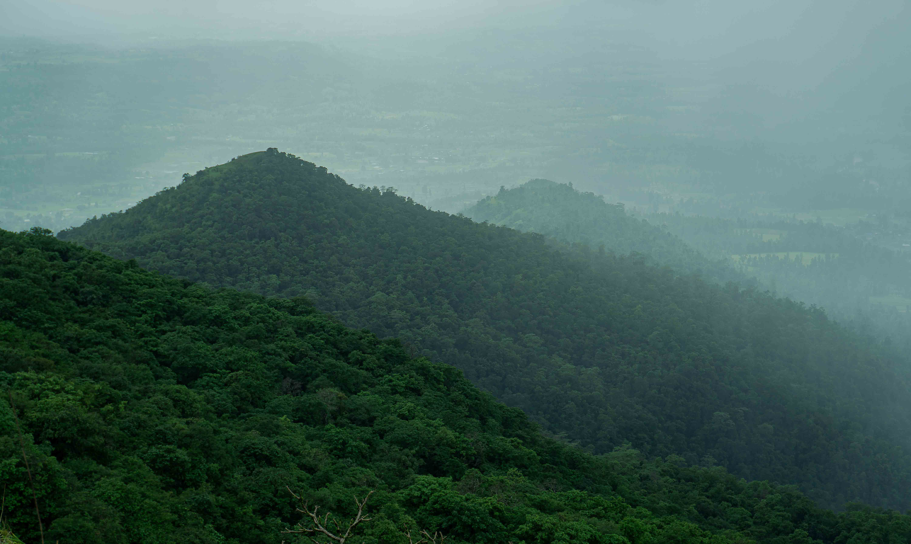
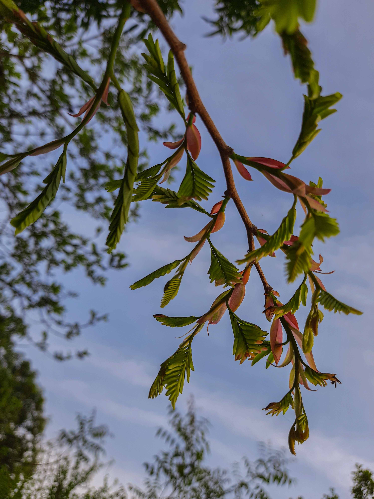
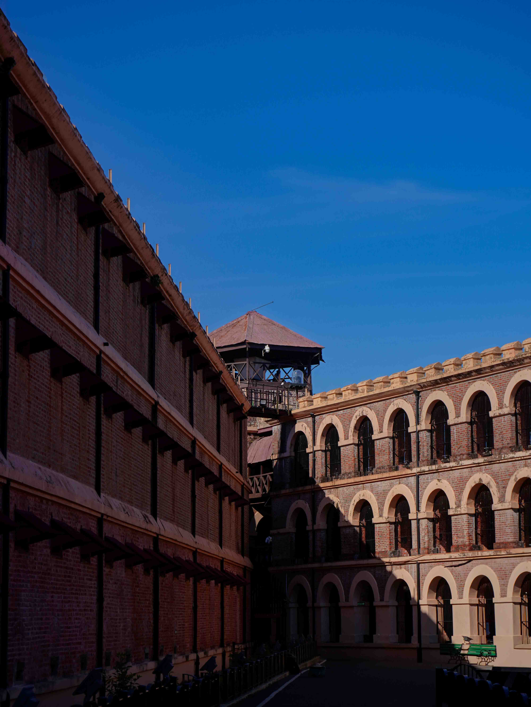
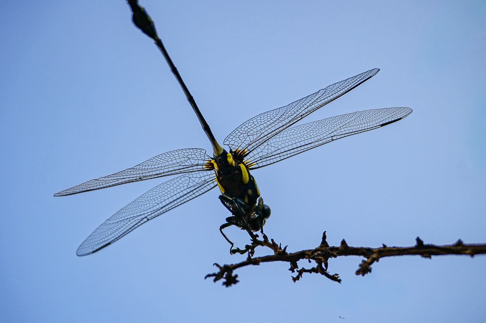
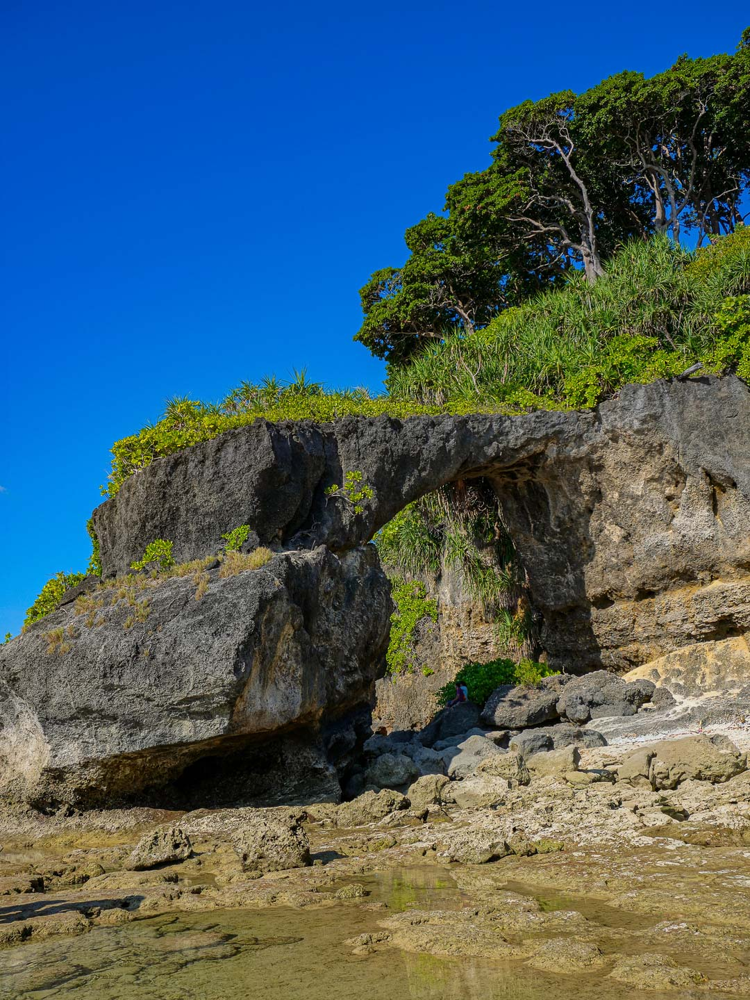
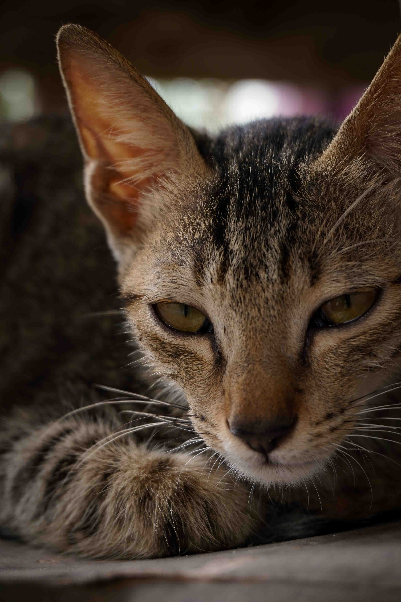
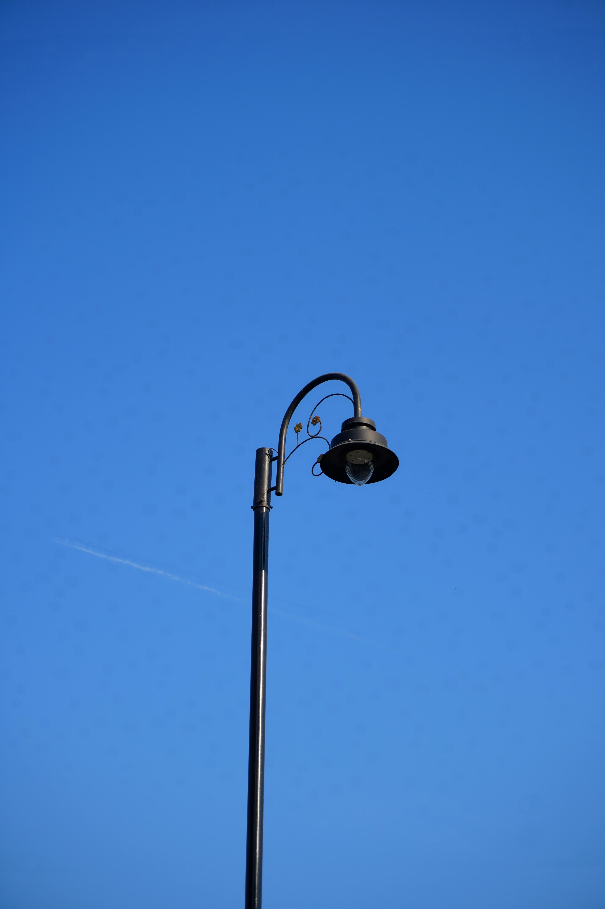
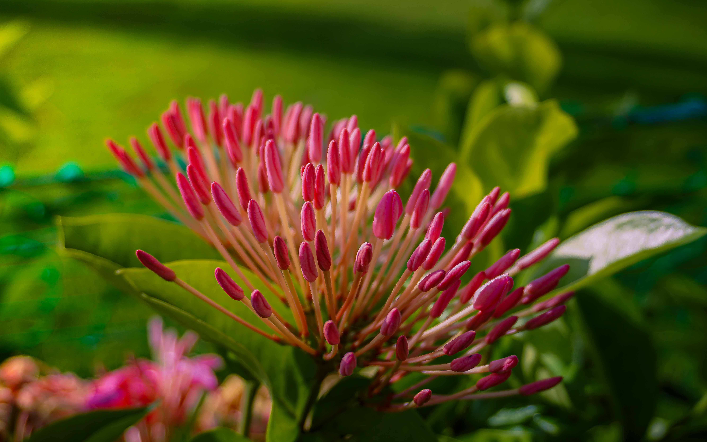
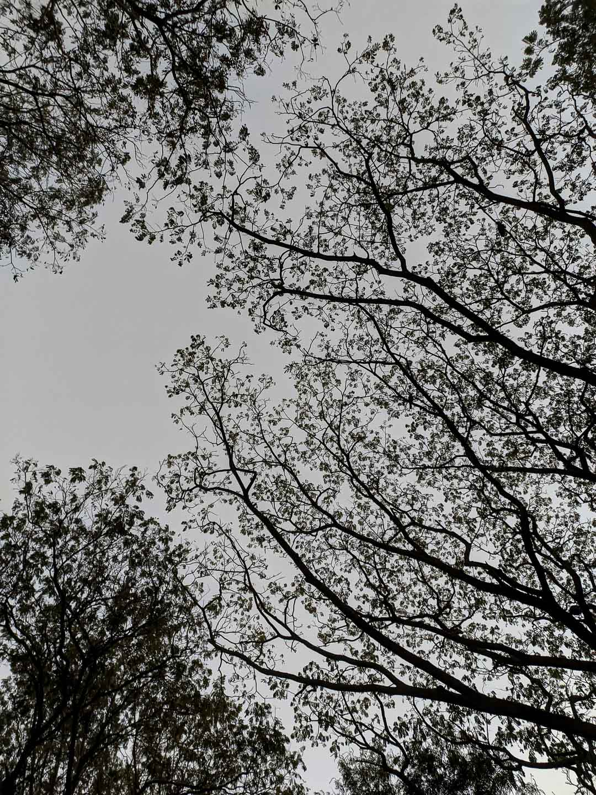

L a n d s c a p e · N a t u r e · W i l d l i f e
Moments suspended in time — exploring the raw geometries, subtle tonal
transitions, and quiet drama of undisturbed earth.








“Photography is an exercise in subtraction.
Distilling a vast, chaotic environment into a
singular, resonant frame of silence.”
Based between varied remote wilderness locations, Krutarth’s work seeks out landscapes and
wildlife that possess a timeless dignity. The intent is not merely to document geographic terrain, but
to translate the profound psychological solitude and awe inherent in undisturbed earth.
Each series is the culmination of extensive wilderness expeditions, braving sub-zero temperatures,
weeks of remote bivouacs, and patient observation to capture ephemeral lighting conditions that
occur only for fractions of a second.
Fine art landscape and wildlife photography
dedicated to the sublime geometry and quiet
presence of the natural world.